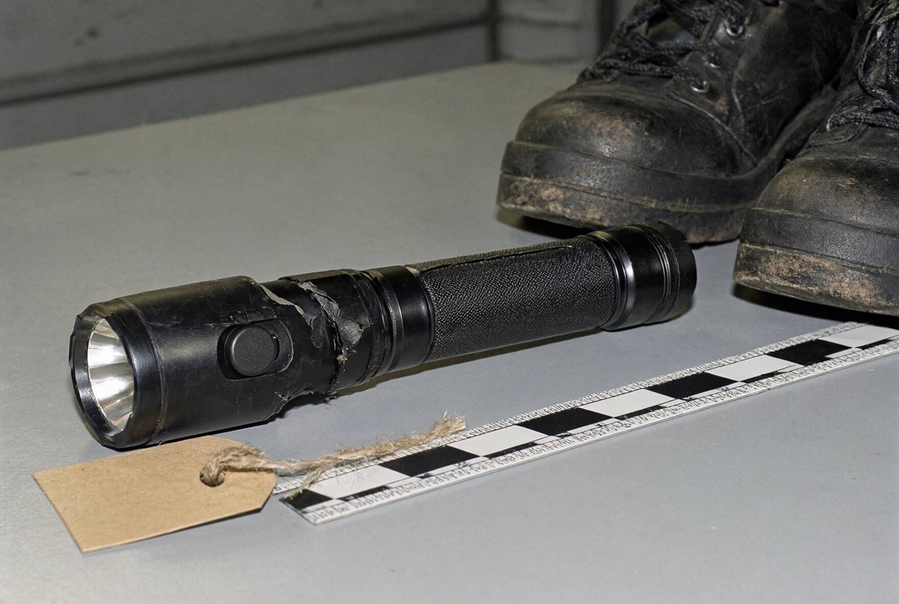

Я, старший слідчий в ОВС СУ ГУНП в Івано-Франківській області майор поліції Волков Дмитро Сергійович, у кримінальному провадженні № 12026090010002417, за участю спеціаліста-криміналіста Гнатишина Р.В., понятих Олексюка П.М. (паспорт 004112907) і Кравців Л.І. (паспорт 003871550), підозрюваного Дячука Р.М. та його захисника — адвоката Петришин М.Б. (свідоцтво № 1822), на підставі ухвал слідчого судді Івано-Франківського міського суду від 20.10.2026 (справи № 344/17921/26 і № 344/17922/26) провів обшук у таких місцях:
Перед початком обшуку Дячуку Р.М. запропоновано добровільно видати предмети, що мають значення для провадження, зокрема ліхтар і взуття. Дячук Р.М. заявив: «У мене нічого нема. Шукайте». Обшук у квартирі проводився в присутності дружини, Дячук Оксани Петрівни.
Гараж відчинено ключем, наданим Дячуком Р.М. У гаражі — автомобільні шини, каністри, стелаж з інструментом. На нижній полиці стелажа — металевий ящик з інструментами (червоний, з написом «НЕ ЧІПАТИ» маркером на кришці). Під верхнім лотком ящика, загорнутий у ганчірку з вафельного рушника, виявлено ліхтар Maglite 4D, чорний, 32 см, з надірваною гумовою накладкою кнопки (бракує шматка). Від ліхтаря й ганчірки — виразний запах хлору. Батарейки на місці, ліхтар справний. Торцева кришка закручена; у різьбі під кришкою — темні нашарування.
У тому ж гаражі, у чорному сміттєвому пакеті за шинами, виявлено тактичні черевики 45 р., чорні, підошва з рисунком «ялинка», з порізом на лівому каблуці. Черевики сліди миття не мають; у протекторі — залишки засохлого ґрунту.

Предмети упаковано окремо, опечатано печаткою СУ ГУНП, вилучено (пакети № 31 і № 32).
У передпокої, у правій кишені куртки охоронця (темно-синя, з нашивкою «Лаз-Сервіс») — новий налобний LED-ліхтарик, у комплекті з еластичною стрічкою, з магазинною наліпкою «89 грн». Ліхтарик вилучено (пакет № 33).
У тумбочці під телевізором, у прозорому файлі з написом «ДАРИНЦІ», виявлено попередній договір від 16.10.2026 купівлі квартири в другій черзі ЖК «Дем'янів лаз» (секція 5, кв. 12, 74 м²) за 300 000 грн. Сторони: покупець — Дячук Оксана Петрівна (дружина), продавець — БФ «Родина» в особі директорки Бабій Г.М. Підстава набуття продавцем права на квартиру — договір пожертви з ТОВ «Лаз-Девелопмент» від 01.07.2026. Підписи сторін і печатка фонду наявні; нотаріально не посвідчений. Пункт 3.1: «Оплата здійснюється готівкою до 31.12.2026». Розписок про оплату не виявлено. За даними відкритих оголошень забудовника, ринкова вартість аналогічної квартири — близько 2,9 млн грн.
У тій самій тумбочці — SIM-карта оператора «Мобіком Україна» (номер на тримачі вирізано), без телефона. Вилучено разом із договором (пакет № 34).
На запитання слідчого про договір Дячук О.П. пояснила: «Руслан приніс у п'ятницю ввечері, сказав — це нам від церкви, для Даринки, не питай. Я й не питала». Дячук Р.М. від пояснень відмовився з посиланням на ст. 63 Конституції України.
Інших предметів, що мають значення для провадження, не виявлено. Обшук фіксувався на нагрудну камеру спеціаліста-криміналіста (носій № 4). Від адвоката Петришин М.Б. надійшло зауваження: «Ліхтар і черевики виявлено в гаражі, до якого мають доступ треті особи» (на питання слідчого, які саме треті особи мають ключі, Дячук Р.М. відповіді не надав). Інших заяв і скарг не надходило.